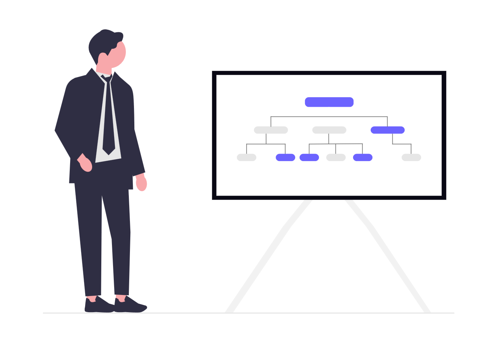

Nos formations sont bien structurées et divisee par module.
Soft skills

But: Le but ultime des soft skills est de permettre à un individu d'exceller non seulement dans l'exécution de ses tâches,
mais aussi dans sa manière d'être, de collaborer et d'évoluer au sein d'une organisation.
Les systemes d'exploitations(linux , Windows)

But: savoir installer un systeme d'exploitation et
avoir la connaissances sur les commandes de bases de linux
Les Bases de l'algorithme

But: Le but d'un algorithme est de fournir une méthode efficace,
logique et automatisable pour atteindre un objectif précis ou résoudre un problème donné.
Les bases de python
But: Le but de Python en tant que langage de programmation est d'offrir un outil puissant,
polyvalent et, surtout, extrêmement lisible et simple à utiliser pour les développeurs.
Les outils versionnings(Git , Github et Gitlab...)
But: L'importance des outils de versionnement (comme Git) est capitale dans
le développement logiciel moderne et la gestion de projets.
Creationd'interface utilisateur(Html et Css)
But: La création d'interfaces utilisateur (UI) avec
HTML et CSS constitue la base du développement web frontal (front-end)